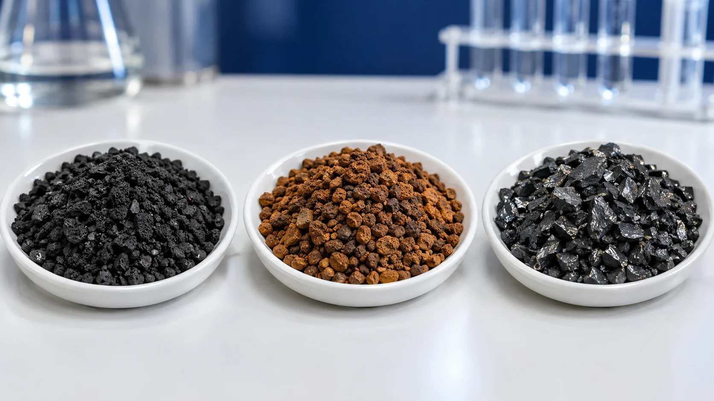

สารกรองน้ำคืออะไร และช่วยดูแลระบบน้ำอย่างไร
สารกรองน้ำคือวัสดุที่บรรจุในถังกรอง เพื่อดักตะกอน ดูดซับสารบางชนิด หรือช่วยแยกสิ่งปนเปื้อนตามคุณสมบัติของวัสดุ จึงต้องเลือกให้สอดคล้องกับผลตรวจน้ำและรูปแบบระบบ ไม่ใช่ใช้สารกรองชนิดเดียวแก้ปัญหาน้ำทุกอย่าง
สำหรับ ระบบกรองน้ำประปาหมู่บ้านและระบบน้ำประปาชุมชน การเลือกสารกรองน้ำประปาที่เหมาะสม ร่วมกับถังกรอง ปั๊มน้ำ และการบำรุงรักษา ช่วยให้ผู้ดูแลจัดการคุณภาพน้ำได้ต่อเนื่อง ทั้งในโรงกรองน้ำประปา ชุมชน โรงเรียน และหน่วยงานท้องถิ่น
สารกรองน้ำมีอะไรบ้าง? รู้จัก 3 ชนิดที่ Sunnex จำหน่าย

สารกรองคาร์บอน (Activated Carbon)
ถ่านกัมมันต์มีรูพรุนและพื้นที่ผิวสำหรับดูดซับ ช่วยลดกลิ่น รส และสารอินทรีย์บางชนิด รวมถึงคลอรีนเมื่อเลือกชนิดและเงื่อนไขใช้งานเหมาะสม ใช้ในระบบปรับคุณภาพน้ำและการเตรียมน้ำก่อนระบบกรองขั้นต่อไป ไม่ใช่สารกรองสำหรับลดความกระด้างหรือกำจัดเชื้อโรคทุกชนิด
สารกรองแมงกานีส (Manganese Media)
ใช้ในกระบวนการลดเหล็กและแมงกานีส ซึ่งอาจเกี่ยวข้องกับน้ำเหลือง คราบสนิม หรือตะกอนดำ เหมาะกับการพิจารณาใช้เป็นสารกรองน้ำบาดาล โดยต้องตรวจคุณภาพน้ำ ค่า pH และเงื่อนไขของสารกรองแต่ละรุ่น บางระบบต้องใช้การออกซิไดซ์ร่วมด้วย ไม่ควรเลือกจากสีน้ำเพียงอย่างเดียว
สารกรองแอนทราไซต์ (Anthracite)
เป็นวัสดุกรองเม็ดสำหรับดักตะกอนและสารแขวนลอย ช่วยลดความขุ่น ใช้ในถังกรองหลายชั้นตามการออกแบบ เหมาะกับงานเตรียมน้ำดิบและระบบกรองน้ำประปา แม้มีสีดำคล้ายคาร์บอน แต่หน้าที่หลักต่างกัน จึงไม่ควรใช้แทนกันโดยไม่ประเมินระบบ
สารกรองชนิดอื่น เช่น เรซินสำหรับลดความกระด้าง และทรายสำหรับกรองตะกอน มีบทบาทในระบบน้ำเช่นกัน แต่รายการจำหน่ายและบริการในหน้านี้เน้นคาร์บอน แมงกานีส และแอนทราไซต์ 3 ชนิดข้างต้น
ข้อมูลจาก EPA อธิบายว่าความสามารถในการดูดซับของคาร์บอนขึ้นกับชนิดวัสดุและคุณภาพน้ำ ส่วน หน่วยงานกำกับคุณภาพน้ำดื่ม DWI ระบุว่าการลดเหล็กและแมงกานีสต้องพิจารณาเคมีของน้ำร่วมกับกระบวนการบำบัด
เลือกสารกรองน้ำประปาและน้ำบาดาลให้ตรงกับปัญหา
เปรียบเทียบหน้าที่ของสารกรองน้ำ 3 ชนิด| ปัญหาที่พบ | สารกรองที่ควรประเมิน | สิ่งที่ต้องตรวจร่วม |
|---|
| น้ำประปามีกลิ่นหรือรสผิดปกติ | คาร์บอน | ต้นเหตุของกลิ่น สารเป้าหมาย เวลาสัมผัส และการอิ่มตัวของสารกรอง |
| น้ำเหลือง คราบสนิม หรือตะกอนดำ | แมงกานีส | เหล็ก แมงกานีส ค่า pH และความจำเป็นในการออกซิไดซ์ |
| น้ำประปาขุ่นและมีตะกอนแขวนลอย | แอนทราไซต์ | ความขุ่น อัตราการไหล การเตรียมน้ำก่อนกรอง และการล้างย้อน |
หากพบปัญหา น้ำประปาขุ่น หรือ น้ำประปามีกลิ่น ควรตรวจทั้งแหล่งน้ำ ถังพัก ท่อ และเครื่องกรอง สำหรับน้ำประปาหมู่บ้านไม่สะอาด อาจต้องแก้หลายส่วนร่วมกัน ไม่ใช่เพิ่มปริมาณสารกรองอย่างเดียว
ชนิดสารกรอง ปริมาณบรรจุ และลำดับชั้นกรองต้องอิงแบบระบบ ขนาดถัง ความหนาแน่นวัสดุ อัตราการไหล และพื้นที่เผื่อการขยายตัวขณะล้างย้อน ทีมงานจึงขอภาพและขนาดถังกรองน้ำก่อนเสนอรายการที่เหมาะสม
Backwash อัตโนมัติ ช่วยลดภาระดูแลเครื่องกรองน้ำ
autorenewจุดเด่นของระบบกรองน้ำ Sunnex ที่รองรับการล้างย้อนอัตโนมัติ
ระบบควบคุมช่วยสั่งล้างย้อนตามการตั้งค่า เพื่อนำตะกอนที่สะสมออกจากชั้นกรอง ลดงานเปิด–ปิดวาล์วด้วยมือ เหมาะกับผู้ดูแลเครื่องกรองน้ำหมู่บ้าน ระบบน้ำประปา อบต. และโรงกรองน้ำที่ต้องการดูแลระบบอย่างสม่ำเสมอ
หากกำลังวางแผนระบบใหม่ สามารถเลือกประเมิน ถังกรองน้ำประปาผิวดิน Sunnex สำหรับแหล่งน้ำผิวดิน หรือ ถังกรองน้ำบาดาล Sunnex ให้สัมพันธ์กับสภาพน้ำ พร้อมตรวจรูปแบบควบคุม Backwash ที่เหมาะกับหน้างาน
1 ตรวจสอบการตั้งค่า
กำหนดรอบล้างให้สัมพันธ์กับคุณภาพน้ำ ปริมาณใช้น้ำ และคู่มือของเครื่อง ไม่ใช้รอบเวลาเดียวกับทุกระบบ
2 ตรวจระบบล้างย้อน
ปั๊มน้ำ แรงดัน วาล์ว และทางระบายน้ำต้องรองรับการล้างจริง แม้มีระบบอัตโนมัติก็ยังต้องตรวจการทำงาน
3 ติดตามสารกรอง
Backwash ช่วยพาตะกอนออก แต่ไม่ทำให้คาร์บอนที่อิ่มตัวกลับมาดูดซับได้เหมือนใหม่ จึงยังต้องประเมินการเปลี่ยนสารกรอง
ความสามารถ Backwash อัตโนมัติเป็นคุณสมบัติของเครื่องและชุดควบคุมที่รองรับ ไม่ใช่คุณสมบัติของสารกรองเพียงอย่างเดียว เครื่องกรองทั่วไปต้องตรวจระบบเดิมก่อนพิจารณาการปรับปรุง
บริการเปลี่ยนสารกรองน้ำ ทั้งเครื่อง Sunnex และเครื่องกรองทั่วไป

ให้ Sunnex ช่วยดูแลตั้งแต่ประเมินปัญหา เลือกสารกรอง ไปจนถึงตรวจระบบหลังเปลี่ยน เหมาะกับผู้ดูแลระบบกรองน้ำบาดาล ถังกรองน้ำประปา และเครื่องกรองน้ำประปาหมู่บ้านที่ต้องการผู้ช่วยดูแลอุปกรณ์เดิม โดยขอบเขตงานขึ้นกับสภาพเครื่องและหน้างาน
ตรวจเครื่องและแหล่งน้ำ
ตรวจภาพถัง รุ่นวาล์ว อาการผิดปกติ ประวัติการล้างย้อน และผลตรวจน้ำที่มี
วางแผนก่อนเริ่มงาน
ประเมินสารกรอง ปริมาณ งานที่ต้องซ่อม และการเตรียมจุดระบายหรือจัดการวัสดุเดิม
นำสารกรองเดิมออก
หยุดระบบและระบายน้ำตามขั้นตอน พร้อมตรวจอุปกรณ์ภายในถังที่เข้าถึงได้
เติมสารกรองตามแบบระบบ
จัดชนิด ปริมาณ และชั้นกรองให้สัมพันธ์กับโครงสร้างถังและการใช้งาน
ล้างและตรวจการทำงาน
ล้างเตรียมสารกรอง ตรวจการไหล วาล์ว การรั่ว และระบบ Backwash ที่รองรับ
ส่งมอบพร้อมแนวทางดูแล
อธิบายการล้างย้อนและการติดตามคุณภาพน้ำ พร้อมวางแผนตรวจน้ำตามวัตถุประสงค์ใช้งาน
หากระบบเดิมไม่พอกับปริมาณใช้น้ำ สามารถประเมินต่อกับ เครื่องกรองน้ำประปาและโรงกรองน้ำ Sunnex หรือเตรียมน้ำก่อนเข้า เครื่องกรองน้ำดื่ม RO ขนาด 3, 6, 12 และ 24 คิวต่อวัน เพื่อให้แต่ละขั้นตอนทำหน้าที่สอดคล้องกัน
สารกรองน้ำควรเปลี่ยนเมื่อไร และดูแลอย่างไร
สังเกตน้ำไหลลดลง ความดันต่างก่อน–หลังถังกรองสูงขึ้นตามค่าที่ผู้ผลิตกำหนด กลิ่นหรือสีกลับมา หรือพบว่าคุณภาพน้ำหลังกรองเปลี่ยนไป อาการเหล่านี้เป็นเหตุให้ตรวจระบบ แต่ยังไม่ใช่ข้อสรุปว่าสารกรองเสียเสมอไป
- ล้างย้อนตามคู่มือและภาระตะกอนจริง พร้อมตรวจว่าน้ำล้างและอัตราการไหลเหมาะกับวัสดุ
- ตรวจปั๊ม วาล์ว ชุดควบคุม และทางระบาย โดยเฉพาะเครื่องที่ตั้ง Backwash อัตโนมัติ
- ติดตามคุณภาพน้ำก่อนและหลังกรอง รวมถึงอายุใช้งานและปริมาณน้ำสะสม ไม่ตัดสินจากความใสเพียงอย่างเดียว
- เปลี่ยนสารกรองเมื่อหมดความสามารถ อุดตันที่แก้ด้วยการล้างไม่ได้ หรือเสื่อมสภาพตามการประเมิน
ไม่มีอายุเปลี่ยนหรือรอบ Backwash เดียวที่ใช้กับทุกระบบ อ่านเพิ่มเติมเรื่อง การบำรุงรักษาระบบน้ำประปาชุมชน เพื่อวางแผนงานดูแลให้ต่อเนื่อง
สารกรองทั้ง 3 ชนิดไม่ได้รับรองว่าน้ำปลอดภัยสำหรับดื่มทุกกรณี หากต้องการผลิตน้ำดื่ม ต้องพิจารณากระบวนการฆ่าเชื้อ การกรองขั้นอื่น และผลตรวจตามมาตรฐานที่เกี่ยวข้องร่วมด้วย
คำถามที่พบบ่อยเกี่ยวกับสารกรองน้ำและบริการเปลี่ยน
สารกรองน้ำมีอะไรบ้าง และ Sunnex ขายชนิดไหน?
+
Sunnex จำหน่ายคาร์บอน แมงกานีส และแอนทราไซต์ พร้อมบริการเปลี่ยนสารกรอง น้ำแต่ละแหล่งอาจต้องใช้วัสดุหรือขั้นตอนอื่นร่วมด้วย จึงควรประเมินสภาพน้ำก่อนเลือก
สารกรองคาร์บอนกับแอนทราไซต์ใช้แทนกันได้ไหม?
+
หน้าที่หลักต่างกัน คาร์บอนเน้นการดูดซับกลิ่น รส และสารบางชนิด ส่วนแอนทราไซต์เน้นดักตะกอนและสารแขวนลอย ไม่ควรสลับแทนกันโดยไม่ตรวจแบบระบบ
สารกรองน้ำบาดาลควรเลือกแมงกานีสเสมอไหม?
+
ไม่เสมอไป ต้องดูผลตรวจเหล็ก แมงกานีส ความขุ่น และคุณภาพน้ำด้านอื่นก่อน แมงกานีสแต่ละผลิตภัณฑ์มีเงื่อนไขใช้งานต่างกัน และบางระบบต้องเตรียมน้ำร่วมด้วย
รับเปลี่ยนสารกรองเครื่องกรองยี่ห้ออื่นด้วยหรือไม่?
+
รับประเมินทั้งเครื่อง Sunnex และเครื่องกรองทั่วไป ส่งภาพถัง รุ่นวาล์ว ขนาดถัง และอาการมาให้ทีมงานตรวจความเหมาะสมและขอบเขตงานก่อนเสนอราคา
เครื่องกรองล้างย้อนอัตโนมัติแล้ว ยังต้องเปลี่ยนสารกรองไหม?
+
ยังต้องประเมินการเปลี่ยน เพราะ Backwash เน้นนำตะกอนออก ไม่ฟื้นความสามารถดูดซับของคาร์บอนที่อิ่มตัว ระบบอัตโนมัติยังต้องตรวจปั๊ม วาล์ว ทางระบาย และการตั้งค่าตามการใช้งาน
สารกรองน้ำราคาเท่าไร และต้องใช้กี่ถุง?
+
ราคาขึ้นกับชนิด ปริมาณ และบริการที่ต้องการ ส่วนจำนวนถุงต้องประเมินจากขนาดถัง ชั้นกรอง และแบบระบบ ส่งข้อมูลให้ทีมงานเสนอรายการก่อนตัดสินใจได้
สารกรองน้ำซื้อที่ไหน และขอคำแนะนำก่อนซื้อได้ไหม?
+
ติดต่อ Sunnex Technology ทาง LINE @sunnext หรือโทร 02-115-1484 และ 081-424-1186 เพื่อสอบถามสารกรองน้ำและบริการเปลี่ยน พร้อมส่งภาพเครื่องและข้อมูลน้ำให้ช่วยประเมิน
น้ำประปาหมู่บ้านขุ่นหรือมีกลิ่น เปลี่ยนสารกรองอย่างเดียวพอไหม?
+
อาจต้องแก้ส่วนอื่นร่วมด้วย เช่น การเตรียมน้ำดิบ ถังพัก การล้างย้อน ระบบท่อ หรือการฆ่าเชื้อ ควรหาต้นเหตุก่อน เพื่อให้การปรับปรุงเครื่องกรองน้ำ อบต. และระบบน้ำประปาหมู่บ้านตอบโจทย์จริง